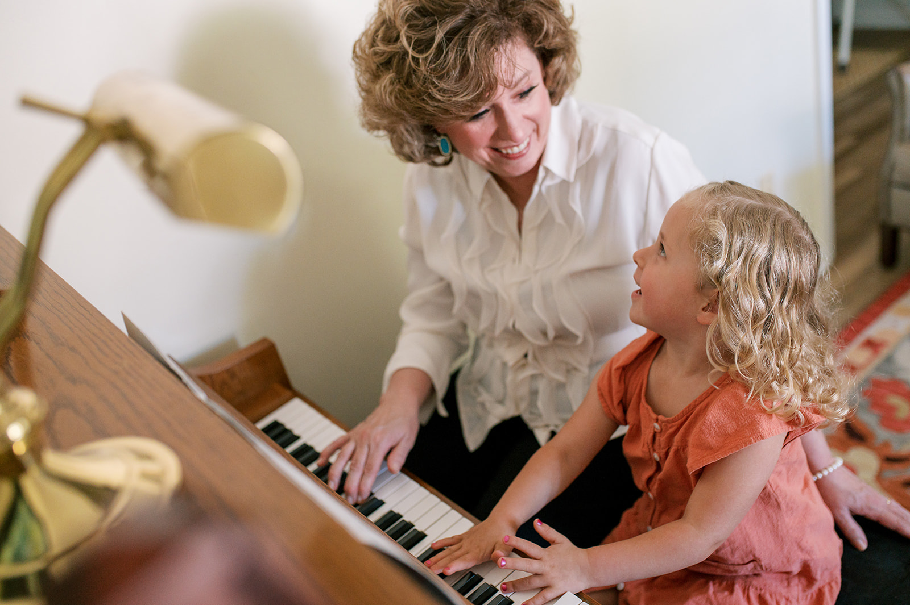
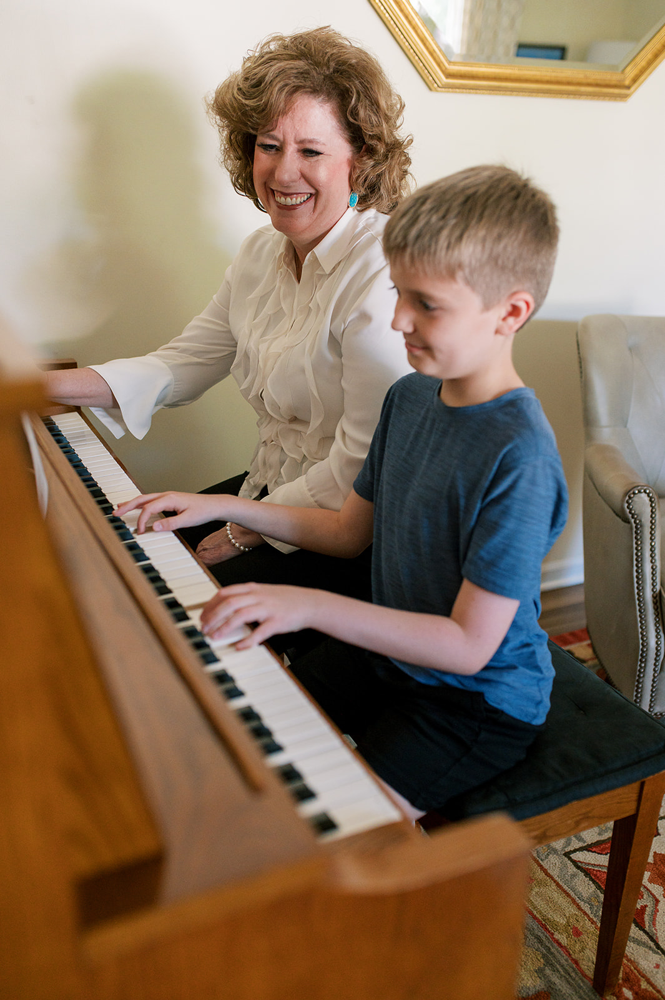
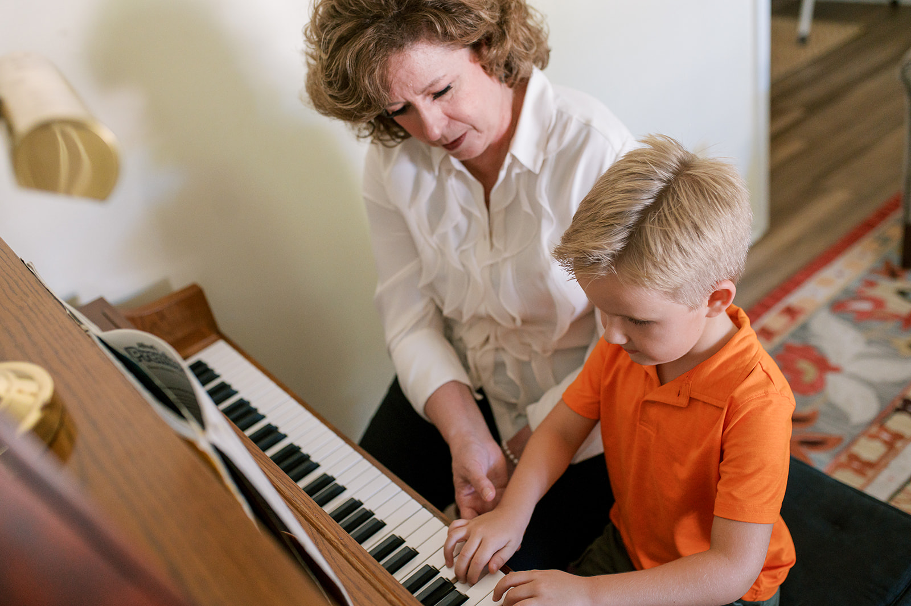

Testimonials
Amy has been our three daughters' piano teacher since 2018. Each of them started at age 6
and their progression has been remarkable. My daughters respond well to her teaching methods,
which are both engaging and effective, incorporating interactive techniques like sticker rewards
to keep the learning process fun.
Moreover, Amy is always incredibly accommodating with scheduling, understanding the demands of our
girls' extracurricular activities. Her flexibility has been great. Overall, our girls have flourished
and we are grateful for Amy's invaluable contribution to their musical development.
-Mike and Jennie Roco

Amy has taught piano to all four of our children, and we highly recommend her!
We have seen first-hand for over a decade that Amy has the patience and knowledge to teach
students of all ages, and she adapts her teaching to each child's learning style and interests.
We are continually impressed that studying piano with Amy gives our children knowledge and
appreciation of music and music theory beyond what is taught in their school music classes.
-John and Mary Newell

We are so thankful we found Amy's Piano Academy! Our boys receive positive,
gentle teaching that challenges and motivates them to continually grow
in their abilities. They look forward to their lessons every week, and we
know they are getting the best instruction.
-Matt and Cheri Appling

We are so glad that we found Amy's Piano Academy when we were searching for an
instructor to provide lessons for our son, and later our daughter. As they have
progressed over the years, she has done a great job of finding special pieces
that appeal to their individual interests and skill sets, which has really
helped make it fun for them and to keep them engaged in the learning process!
We really appreciate Amy's ability to adjust the pace of learning and the
exercises to each of our children's natural abilities, while still keeping
them challenged. Amy has also been very flexible when we have to juggle busy
schedules and move our planned lesson times around other event/practice conflicts.
We are excited to see how far our kids decide to go with their piano playing and we
know they are in good hands learning from Amy on this part of the journey!
-Damon & Cathie Holzapfel
Lessons with Mrs. Eisenhutt have been not just beneficial, but essential
to my musical career. I never set out to be a professional, rather merely
someone who is skilled enough to take pleasure in his own craft, and Mrs. Eisenhutt
helped me accomplish that goal. Mrs. Eisenhutt's priority with me was always clearly
to help me develop a talent, not to train a pro, and I have always been grateful for that.
She never pushed me too hard, was never disappointed when I forgot to do my theory assignment,
and always made sure it was about my enjoyment of the music. I learned music theory, I learned technique,
I learned sheet music, I learned to put emotion into my playing. In short, Mrs. Eisenhutt
taught me not just how to press the keys or to read the notes, but how to be a musician.
-Xander Carter
Mrs. Amy Eisenhutt has been a wonderful piano teacher for my children.
15 years ago I was looking for a piano teacher for my 5 year old son.
A friend recommended Mrs. Eisenhutt. It was the best decision I made for both of my children.
She was gentle, kind, patient and understanding with my kids as they learned how to play the piano.
She understood when to push them to try harder pieces and she knew when to go slowly so
they could go at their own pace when learning a piece. I have recommended Mrs.
Eisenhutt to many friends when they have asked for a piano teacher recommendation.
Not only is Mrs. Eisenhutt an excellent teacher, she is also an excellent accompanist and an
excellent person. I highly recommend Mrs. Eisenhutt to anyone who would
like to learn how to play the piano.
-Paula Carter